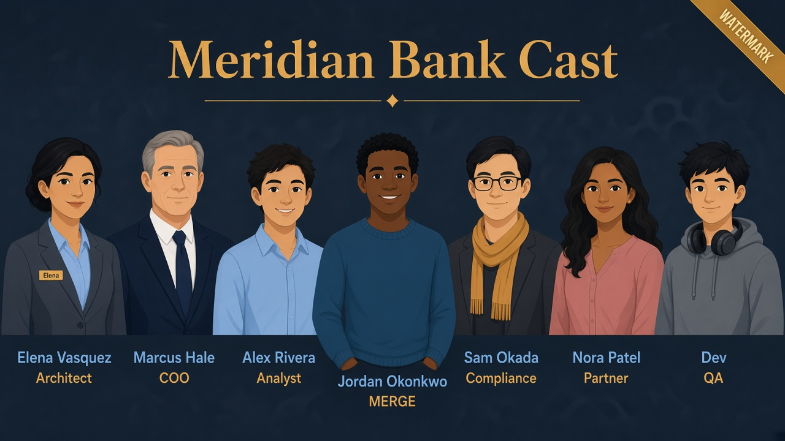

Lab 02 · Tuesday · You are Elena · Jordan owns pipelines
Stop rebuilding the transaction ledger every night
Read the teach-first sections below before you run SQL or dbt.
No assumed jargon — watermark, materialization, and each file are explained in plain English.
Business problem
Meridian’s transaction history grows daily. Jordan’s nightly full refresh of the fact table burns warehouse credits and still misses same-day updates.
Marcus: “Fix the ledger without doubling our Snowflake bill.”
Solution you will build
Land Day-1 rows in BRONZE_LANDING.TXN_EVENTS, clean them in a dbt viewstg_orders,
then keep a durable fact table fct_orders_incremental up to date with incremental merge
(only new/changed rows, keyed by txn id, filtered by an updated_at watermark).
Before
Full refresh ~45 min — rewrites all history nightly.

After
Only deltas — MERGE rows newer than the watermark.
Teach first — the whole pipeline in one picture
Three objects. One job. Watch the pulse move left → right.
1 · Source (Snowflake table)BRONZE_LANDING.TXN_EVENTSJordan’s dock · raw truth · main table
2 · Staging (dbt view)SILVER_CURATED.STG_ORDERSrename columns · no storage of its own
Nightly we rebuild the whole ledger. Five million rows. Forty-five minutes. Credits cry.
ElenaArchitect
Stop re-reading the whole book. Put a watermark on updated_at — tonight only process pages after last night’s bookmark. That’s dbt incremental MERGE.
Watermark = bookmark. Incremental = only new/changed pages.
Whiteboard
Alex asks the dangerous question
AlexAnalyst
So incremental is always cheaper and better?
ElenaArchitect
No. Tiny tables, broken watermarks, weird deletes — full refresh can be safer. “Incremental always” is how juniors fail interviews.
Picture · Only change the ledger
Full refresh = rebuild everything. Incremental = touch only what changed since last run.
Foldersmodels/staging/ / silver/ / marts/ are only how files sit on disk — not Snowflake schema names.
This lab’s models land in SILVER_CURATED. Lab 04 Part B maps gold marts to GOLD_MART via dbt_project.yml.
What is a watermark? (assume you never heard the word)
Bookmark metaphor
Imagine a book of every transaction ever. Last night you finished reading up to
page “2026-10-01 14:00” — that page number is your watermark
(also called a high-water mark).
Tonight you do not re-read the whole book. You open at the bookmark and only process
pages with a timestamp newer than that mark. When you’re done, the bookmark moves forward.
In our model the bookmark column is updated_at.
On an incremental run dbt asks: “What is the MAX(updated_at) already in the fact table?”
then only pulls staging rows where updated_at is greater than that.
After Day 1 run
Fact has rows 1001–1005.
Watermark = max(updated_at) = 2026-10-01 14:00
Day 2 source changes
New rows 1006, 1007 (Oct 2).
Row 1001 status → SETTLED with updated_at bumped to Oct 2.
Second dbt run
Only rows with updated_at > watermark enter the MERGE.
Old rows 1002–1005 are not rebuilt.
Classic bug
If Jordan changes STATUS but forgets to bump UPDATED_AT, the watermark filter
skips that row and Alex’s fact stays wrong. The timestamp is part of the contract with the source.
dbt “materialized” — what options exist, why we chose incremental
materialized=… tells dbt how to store the result of a model’s SELECT in Snowflake.
It is not a Snowflake keyword — it is a dbt config that compiles to CREATE VIEW / CREATE TABLE / MERGE, etc.
view
Staging — always fresh
No stored copy; hits upstream every query.
stg_orders ✓ cheap cleanup
table
Full rebuild each run
CREATE TABLE AS SELECT — OK for small dims.
5M txns nightly ✗ 45 min burn
incremental
Meridian fact choice
First run builds; later runs MERGE deltas only.
watermark on updated_at unique_key = order_id
Not this lab
ephemeral · materialized_view
Inlined CTEs; Snowflake MVs — see Lab 05 dynamic tables.
—
Why incremental + merge for Meridian:
Marcus won’t pay for rewriting millions of settled txns every night.
unique_key='order_id' means “if txn 1001 already exists, UPDATE it; else INSERT.”
That upsert is Snowflake MERGE — not a blind append (append alone would duplicate 1001).
Walk the code — line by line
A) stg_orders.sql — the translator
{{ source('bronze_landing', 'txn_events') }} means: “read the table declared in _sources.yml
as Meridian’s BRONZE_LANDING dock.” dbt does not create TXN_EVENTS — you did, in SQL.
Renames (txn_id → order_id) keep bank language at the dock and slightly more “analytics” names
in SILVER_CURATED models. Still the same five rows.
dbt · stg_orders.sql
{{ config(materialized='view') }}
select
txn_id as order_id,
client_id as customer_id,
status,
amount as order_total,
updated_at
from {{ source('bronze_landing', 'txn_events') }}
✓ All checks passed — then load Day 1 data (next step) before dbt run
2
Day 1 — create the main table at the dock
TXN_EVENTS is the source of truth
dbt will not create this. Run this SQL in Snowsight first. Every later model is a lens on this table.
SQL · sql/02_orders_source.sql
USE ROLE ROLE_BANK_LAB_ADMIN;
USE WAREHOUSE WH_BANK_XS;
USE DATABASE MERIDIAN_BANK;
USE SCHEMA BRONZE_LANDING;
CREATE OR REPLACE TABLE TXN_EVENTS (
TXN_ID NUMBER,
CLIENT_ID NUMBER,
STATUS STRING,
AMOUNT NUMBER(12,2),
UPDATED_AT TIMESTAMP_NTZ
);
INSERT INTO TXN_EVENTS VALUES
(1001, 1, 'POSTED', 40.00, '2026-10-01 10:00:00'),
(1002, 2, 'POSTED', 15.50, '2026-10-01 11:00:00'),
(1003, 3, 'SETTLED', 99.00, '2026-10-01 12:00:00'),
(1004, 4, 'POSTED', 22.00, '2026-10-01 13:00:00'),
(1005, 5, 'REVERSED', 10.00, '2026-10-01 14:00:00');
SELECT 'day1' AS batch, COUNT(*) AS n FROM TXN_EVENTS;
✓ n = 5 in BRONZE_LANDING.TXN_EVENTS
3
First dbt run — build view + fact
What happens under the hood
is_incremental() is false → watermark filter is omitted → all 5 staging rows load into a new table. Staging becomes a view.
Terminal · first run
dbt run --select stg_orders fct_orders_incremental
dbt test --select fct_orders_incremental
SQL · verify in Snowsight
USE ROLE ROLE_BANK_LAB_ADMIN;
USE DATABASE MERIDIAN_BANK;
SELECT COUNT(*) AS rows_after_first_run FROM SILVER_CURATED.FCT_ORDERS_INCREMENTAL;
-- Look in SILVER_CURATED: STG_ORDERS (view) + FCT_ORDERS_INCREMENTAL (table)
Day 2 — change the source, then prove the watermark
This is the whole point of the lab
Two inserts + one update with a newerUPDATED_AT. Second run MERGEs only those rows — history is not rebuilt.
SQL · sql/02_orders_day2.sql
USE ROLE ROLE_BANK_LAB_ADMIN;
USE WAREHOUSE WH_BANK_XS;
USE DATABASE MERIDIAN_BANK;
USE SCHEMA BRONZE_LANDING;
INSERT INTO TXN_EVENTS VALUES
(1006, 1, 'POSTED', 55.00, '2026-10-02 09:00:00'),
(1007, 2, 'POSTED', 18.00, '2026-10-02 09:30:00');
UPDATE TXN_EVENTS
SET STATUS = 'SETTLED', UPDATED_AT = '2026-10-02 10:00:00'
WHERE TXN_ID = 1001;
SELECT TXN_ID, STATUS, UPDATED_AT FROM TXN_EVENTS ORDER BY TXN_ID;
Terminal · second run
dbt run --select fct_orders_incremental
SQL · prove merge
SELECT ORDER_ID, STATUS, UPDATED_AT
FROM SILVER_CURATED.FCT_ORDERS_INCREMENTAL ORDER BY ORDER_ID;
7 rows total (no duplicates on 1001)
1001 is SETTLED
1006 and 1007 exist
Interviewer presses further — say these out loud
Basics got you into the room. Cover each answer before you open it.
If you blank here, an Architect + dbt interviewer will know.
Q1. When is full refresh cheaper or safer than incremental MERGE?
Say: Small dimensions, broken watermarks, late deletes you don’t model, or schema-breaking rebuilds. Incremental wins on growing TXN_EVENTS; full refresh wins when the table is tiny or the MERGE contract is wrong. “Incremental always” is a buzzword fail.
Q2. Watermark on updated_at skips a late-corrected row — failure mode and fix?
Say: Source corrected order_id 1001 but updated_at didn’t move — MERGE never re-reads it. Fix: trustworthy change signal with Jordan, periodic lookback window, or full refresh for that model — not “run dbt harder.”
Q3. unique_key MERGE vs append-only — when do you refuse MERGE?
Say: If grain isn’t stable or you need immutable audit history, MERGE upserts hide the past. Board facts want current status per order_id; compliance event logs often append. Wrong unique_key duplicates or silently overwrites.
Q4. Why not keep the watermark only in a Snowsight worksheet outside dbt?
Say: Then CI, Slim CI, and docs don’t own the contract — worksheets drift from prod. dbt incremental + unique_key keeps MERGE policy in git. WH_BANK_XS just executes it.
Q5. Does incremental always reduce credits?
Say: Usually less scan — but a bad watermark (full table every run) or huge MERGE join can cost more than a disciplined full refresh. Prove Day-2 MERGE with new rows + status change — evidence, not hope.
Elena’s wrap-up (say this out loud)
“Meridian’s problem was a nightly full refresh on growing txn history. The main table is BRONZE_LANDING.TXN_EVENTS.
stg_orders is a view that renames columns; fct_orders_incremental is an incremental table that MERGEs on order_id
and only reads rows newer than the updated_at watermark — a bookmark on the last processed timestamp.
Day 2 inserts and a status change on 1001 merged without rebuilding the whole ledger.
Outcome: cheaper pipeline, correct upserts, proof as MERGE not a full-table rewrite.”